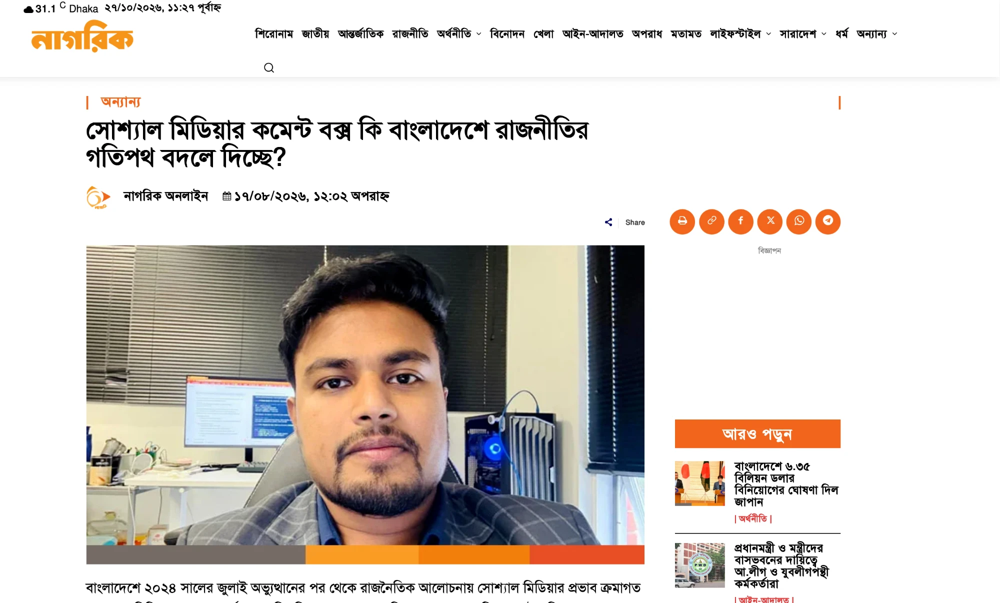

Writing for the Public
Op-eds in Bangladeshi national media, written in Bengali — taking the same habits of evidence I use in research and pointing them at questions people are already arguing about.

সোশ্যাল মিডিয়ার কমেন্ট বক্স কি বাংলাদেশে রাজনীতির গতিপথ বদলে দিচ্ছে?
“Is the social media comment box changing the course of politics in Bangladesh?”Since the July 2024 uprising, social media has grown steadily as a force in Bangladeshi political discussion. Drawing on a Build Up baseline analysis of roughly 200,000 collected posts — Facebook generating the most political engagement, TikTok drawing very high like counts per post — the piece argues that high online visibility should not be mistaken for national public opinion. Internet access is uneven by gender, region and age, and there is a real gap between the volume of online criticism and survey data showing majority support for the interim government. Social media clearly shapes political narratives and arguments over legitimacy; showing it directly changes government policy would take case-by-case evidence.
টিকা থেকে মশা নিয়ন্ত্রণ: ডেঙ্গু গবেষণায় বাংলাদেশের অগ্রগতি কতটা?
“From vaccines to mosquito control: how far has Bangladesh progressed in dengue research?”Dengue turned alarming again in 2026, with more than 103,000 hospitalisations and 316 deaths recorded up to 13 October. The article walks through the research actually on the table — a candidate vaccine, insecticide-resistant Aedes mosquitoes, shifting virus serotypes and rapid diagnostic tests — and is honest about where each one stops. None of these advances carries the problem on its own; surveillance, breeding-site control, timely diagnosis and sufficient hospital capacity have to arrive together.